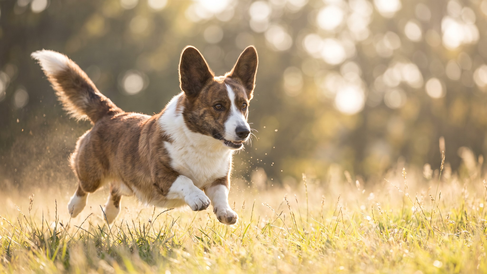

На первый взгляд — просто корги. Но кардиган это отдельная порода с историей на три тысячи лет старше пемброка, другим строением и другим характером. Именно его хозяева чаще всего описывают так: «сам по себе». Ниже — всё, что нужно знать до того, как взять щенка.
🐾 У вас вельш-корги кардиган?
AnimaLife соберёт уход под породу: к каким болезням есть склонность, что проверять по возрасту, чем кормить и когда пора к врачу. Бесплатно, прямо в мессенджере.
Собрать план ухода → Собрать в MAX →
У вас iPhone? AnimaLife есть в App Store
Это две разные породы, признанные FCI отдельно. Путаница возникает из-за схожей комплекции, но отличия видны сразу:
Вельш-корги кардиган тысячелетиями гонял скот, решая задачи самостоятельно. Это сформировало породу с рабочим интеллектом и независимым мышлением. Он хорошо обучается, но не будет выполнять команду механически — ему нужно понять смысл.
С хозяином — преданный и внимательный. С чужими — сдержан, без агрессии. Хорошо уживается с детьми, но со щенячьего возраста нужно объяснять: дети не скот, их не надо пасти за пятки.
Лает по делу — предупреждает, не нагнетает. Скука для него разрушительна: без нагрузки начинает придумывать занятия сам.
Кардиган — рабочая порода средней интенсивности. Два выгула в день по 30–40 минут с элементами нюхания, поиска или апортировки закроют физическую потребность. Подходит для городской квартиры при условии регулярных прогулок.
Длинный позвоночник на коротких лапах — строение, которое требует внимания хозяина. Это не болезнь, но риск: при лишнем весе или частых прыжках нагрузка на межпозвонковые диски возрастает. Что в руках владельца:
Если собака стала осторожнее при подъёме или изменилась походка — повод для осмотра у ветеринара, не ждите.
Шерсть двухслойная: плотный подшёрсток и прямая ость. Линяет два раза в год обильно, в остальное время умеренно.
Материал носит информационный характер и не заменяет очную консультацию ветеринара.
🐾 Ваш питомец — вельш-корги кардиган?
Заведите профиль в AnimaLife: приложение запомнит породу, возраст и вес и будет подсказывать по уходу именно для неё. Вопросы AI-ветеринару — круглосуточно и бесплатно.
Завести профиль → Завести в MAX →
У вас iPhone? AnimaLife есть в App Store
🐾 Понравился разбор?
Подпишитесь на канал — каждый день разбираем по одному тревожному симптому у кошек и собак: что в пределах нормы, а когда пора к врачу. Подпишитесь, чтобы не пропустить разбор, который может спасти здоровье вашего питомца.